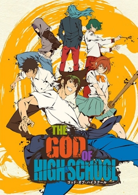

The God of High School (갓 오브 하이 스쿨|ゴッド・オブ・ハイスクール, Gas Obeu Hai Seukul|Za Godo obu Hai Sukuru) is an anime adaptation based on the South Korean webtoon written and illustrated by Park Yongje. Japanese animation studio MAPPA produced the animated series in cooperation with Crunchyroll and Webtoon. It premiered on July 6th, 2020 on Japan's Tokyo MX and AT-X television stations and on Crunchyroll in all available regions.
The "God of High School" tournament has begun, seeking out the greatest fighter among Korean high school students! All martial arts styles, weapons, means, and methods of attaining victory are permitted. The prize? One wish for anything desired by the winner. Taekwondo expert Jin Mo-Ri is invited to participate in the competition. There he befriends karate specialist Han Dae-Wi and swordswoman Yu Mi-Ra, who both have entered for their own personal reasons. Mo-Ri knows that no opponent will be the same and that the matches will be the most ruthless he has ever fought in his life. But instead of being worried, this prospect excites him beyond belief. A secret lies beneath the facade of a transparent test of combat prowess the tournament claims to be—one that has Korean political candidate Park Mu-Jin watching every fight with expectant, hungry eyes. Mo-Ri, Dae-Wi, and Mi-Ra are about to discover what it really means to become the God of High School.